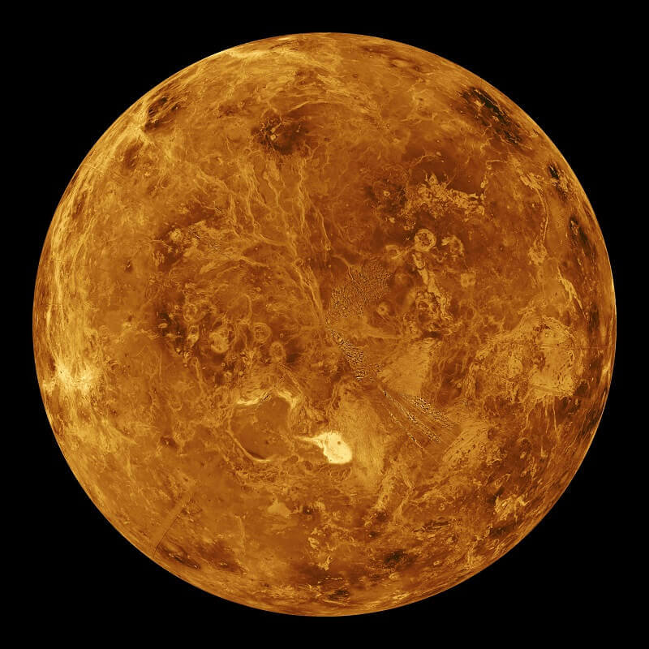

Венера е втората по ред планета от Слънчевата система и носи името на богинята Венера от римската митология. Тя е земеподобна планета, много близка по големина и общи качества до Земята; понякога е наричана „Планетата-сестра на Земята“. Понеже Венера е по-близко до Слънцето спрямо Земята, тя винаги се наблюдава близко до него. На Земята тя може да се наблюдава само непосредствено преди изгрев и след залез. Обикновено тогава тя е най-яркото небесно тяло след Луната и Слънцето и затова понякога е смятана за звезда и е наричана Зорница, Денница (Деница) и Вечерница.
Венера има атмосфера, която съдържа главно въглероден диоксид и малко количество азот. Налягането на повърхността на планетата е огромно – 90 пъти по-високо от това на земното морско равнище или еквивалентно на налягането в земните океани на около 1 km дълбочина. Атмосферата, богата на CO2, поражда силен парников ефект и повишава температурата на повърхността с повече от 460 °C над стойността, която тя би имала, ако Венера нямаше атмосфера.
На 12 февруари 1961 г. Венера 1, изстрелян от СССР и първи от програмата Венера, става първият апарат, достигнал до друга планета. Въпреки проблеми, свързани с прегрял ориентационен сензор, Венера 1 се счита за първия междупланетен апарат. На 1 март 1966 г. съветската сонда Венера 3 се разбива на повърхността на Венера и така става първият обект, достигнал до повърхността на друга планета. Венера 2 (изстреляна по-рано) прегрява и приключва мисията си преждевременно.

Ето някои данни за Венера.
| Отдалеченост от Слънцето | 108 209 457 км. |
| Екваториален диаметър | 12 100 км. |
| Плътност спряма водата | 5,24 пъти |
| Продължителност на деня | 243 земни дни |
| Продължителност на годината | 225 земни дни |
| Средна температура на повърхността | 471°C |
| Известни луни | 0 |